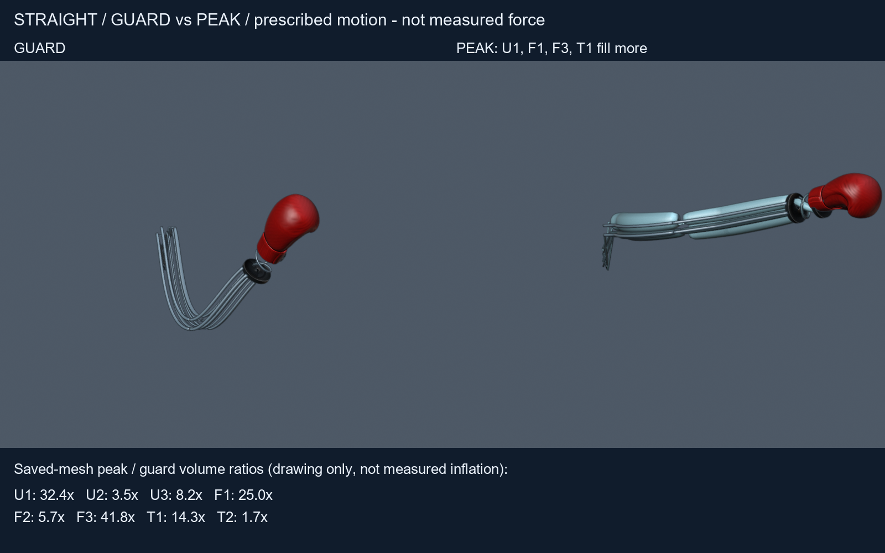
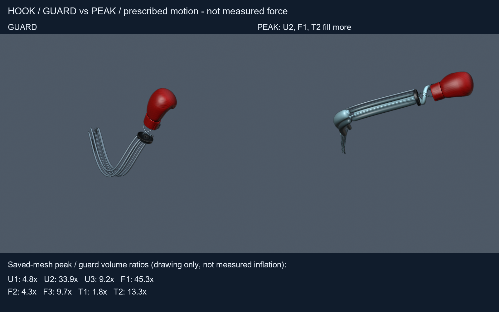
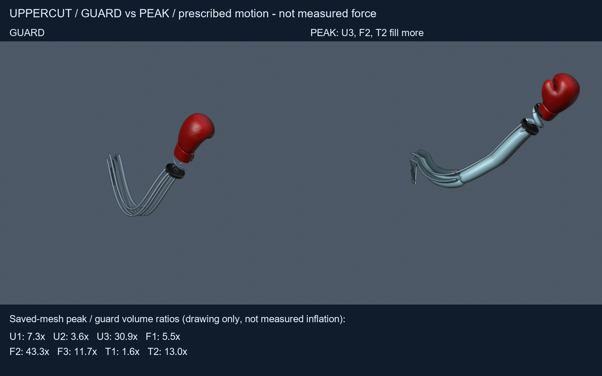
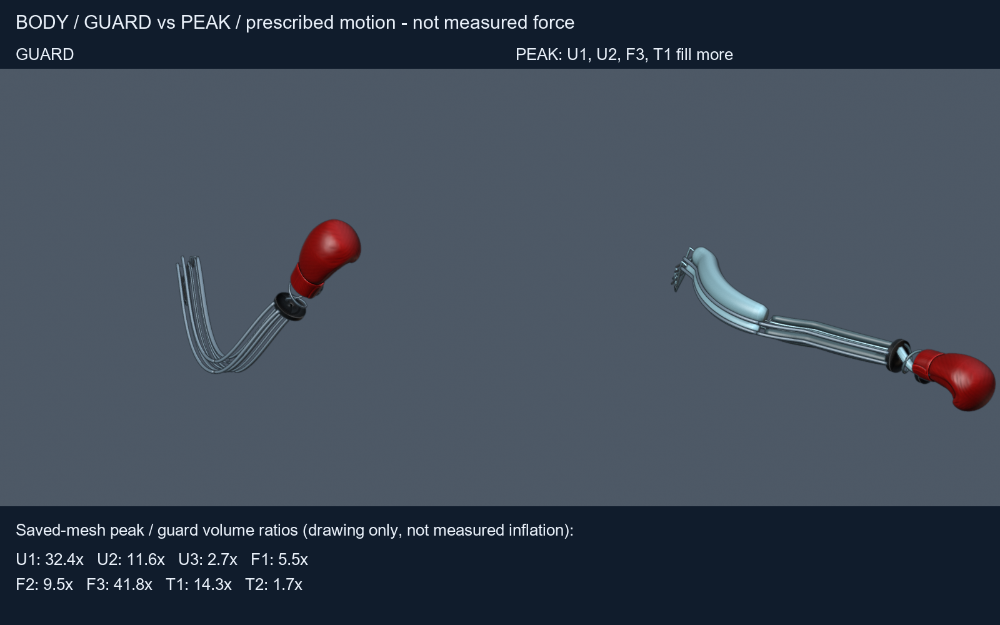

01 — Notice
02 — Architecture freeze
U/F/T colors and bar emphasis are uncalibrated pedagogy — not pressure, strain, flow, duty cycle, or valve commands.
03 — Current baseline
Two packets, one home. Older day packets stay linked under History; they are not competing front doors.
| Packet | What it is | Role on this page |
|---|---|---|
| n3-standoff-pitch-policy | Reach / height / body atlas with Option A strike-dependent stand-off and coupled partial pitch. | Policy film atlas_review.mp4; RH-01 disposition. |
| n3-airflow-bladder-bend-B2 | AF-01 pedagogy successor: visible swelling with prescribed bend; paired guard/peak stills. | Airflow film airflow_review.mp4; AF-01 CLOSED-A presentation with AF-01b residual. |
04 — Visual review
Use speed controls when the browser allows; native video controls always work. Films are prescribed SE(3) / illustrative cues — not measured force.
Reach / stand-off / pitch (Option A)
Airflow pedagogy (B2)
Optional B2 guard / peak stills




If a media file fails to load, open via Start_Review.ps1 (port 8766) from the checkout that holds the packet media folders.
05 — Status table
Disposition for Michael's everyday home. NEXT_PROMPT remains awaiting_michael (unchanged by this page).
| ID | Status | Plain meaning |
|---|---|---|
| RH-01 | policy ACCEPT | Option A stand-off / pitch policy accepted for Track A review (closer boxes; no lengthening). Not a physical reach qualification. |
| AF-01 | CLOSED-A | B2 film presents visible inflation pedagogy with prescribed bend. Closed for visualization / review presentation only. |
| AF-01b | residual OPEN | Exaggerated educational swell is not packaging / contact / textile-strain proof; independent blind-viewer nuance and physical chamber-to-curvature remain open. |
| RH-02 | OPEN | Partial-stroke aim residual (fragile 50% inclusion, clipped tall aim, overlapping target/bag proxies). |
| C-01 | Critical OPEN | No measured pressure-to-motion-to-contact chain. Track A cannot close strike impulse. |
| B-06 | Critical OPEN | Root / bearing / hub / weld / anchor load path incomplete. No invented ratings. |
06 — Plain-language glossary
| Term | Everyday meaning | Why it matters here |
|---|---|---|
| Track A | Digital model + review films so the design is understandable. | Proves the story of shape and motion — not punch power. |
| Option A | Closer stand-off boxes + coupled partial pitch instead of lengthening the soft arm. | RH-01 policy path now on this front door. |
| RH-01 / RH-02 | Reach policy vs partial-stroke aim residuals. | Policy can be accepted while partial-reach quirks stay open. |
| AF-01 / AF-01b | Can you see inflation with bend? / what still is not proven after the film. | B2 closes presentation (CLOSED-A); residuals stay honest. |
| CLOSED-A | Closed for this visualization / model-audit purpose only. | Not "ready to manufacture" or "safe in contact." |
| U / F / T | Upper, forearm, and soft-torsion wrist chamber groups. | Eight soft chambers per arm; cues are qualitative. |
| C-01 / B-06 | Missing measured impact chain / incomplete root structure. | Both remain Critical OPEN; films cannot close them. |
| Architecture freeze | Soft air fabric arms, fixed bag, rotating shoulders only. | Stops quiet return to rigid sticks or metal distal hardware. |
07 — Deep links
- n3-standoff-pitch-policy INDEX
- REACH_POLICY / .md
- REACH_VERDICT
- Standoff EXECUTIVE_REVIEW
- Standoff DEFECT_REGISTER
- n3-airflow-bladder-bend-B2 INDEX
- AIRFLOW_PEDAGOGY / .md
- B2 EXECUTIVE_REVIEW
- B2 DEFECT_REGISTER
- Assessment: N3 reach/height/body
- Assessment: N3 geometry delta
- Assessment: N2 Track A
- chats/NEXT_PROMPT.md (awaiting_michael)
08 — History (not competing homes)
Prior packets remain readable for lineage. Open them for context; do not treat them as the everyday front door.
- n3-reach-height-body — prior reach/height/body atlas
- n3-airflow-bladder-bend — failed AF-01 film (superseded by B2)
- n3-geometry-delta — G-03/G-05 clearance delta
- START_HERE_N1_PRODUCT_DOSSIER.html — archived full N1 product dossier
- revision_n/START_HERE.html — older revision archive when present
09 — How to open
- Preferred: from the repo root on DESKTOP-P08972I run
Start_Review.ps1, then open
http://127.0.0.1:8766/START_HERE.html - Same-day copy (optional):
http://127.0.0.1:8766/reviews/2026-09-19/START_HERE.html - file:// fallback:
C:\Users\mfawe\OneDrive\Documents\GitHub\robotic-punching-bag\START_HERE.html
Some browsers restrict local video under file:// — use the local server if films do not play. - Pages (placeholder): https://myorglab-repos.github.io/astra-previews/ola/start-here/
Do not git push from this rebuild. Do not flip NEXT_PROMPT off awaiting_michael. Commit left to Michael / Ibrahim.
Engineering paper
Track B and B-06 drafts
Docs-only plans on disk (no lab spend yet):